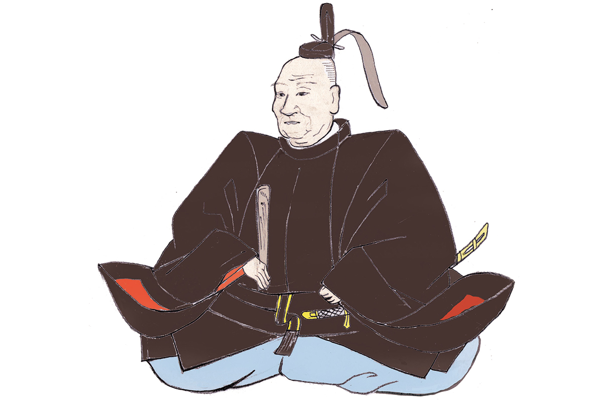
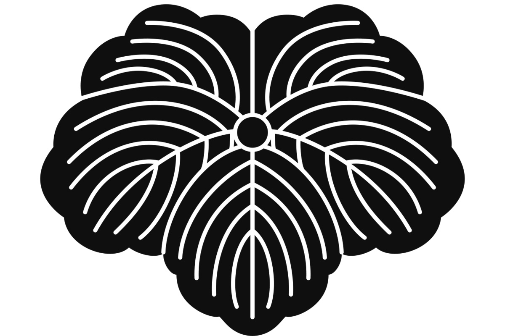
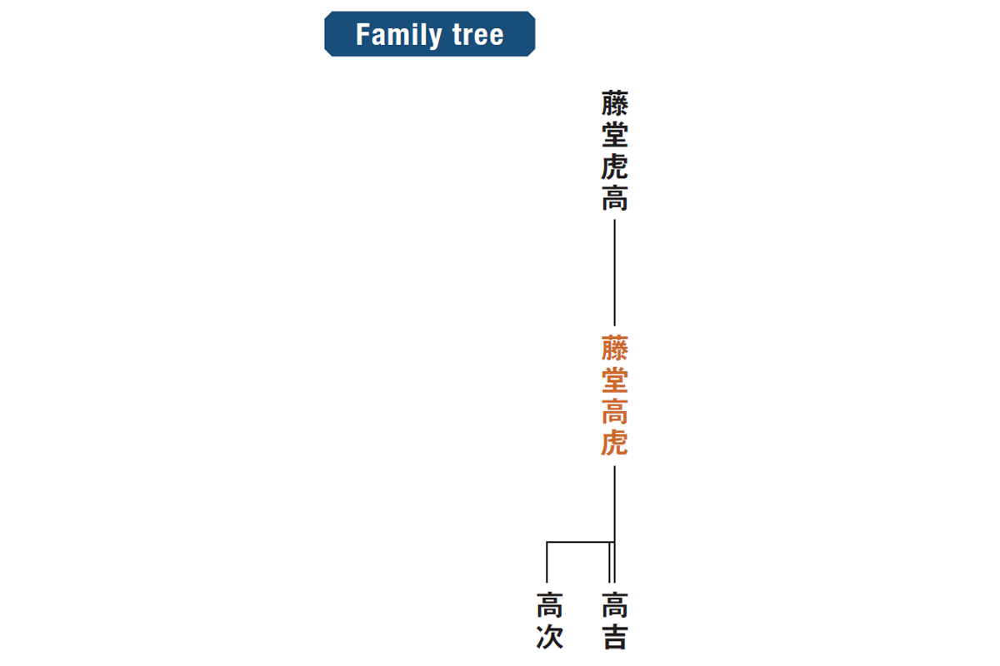
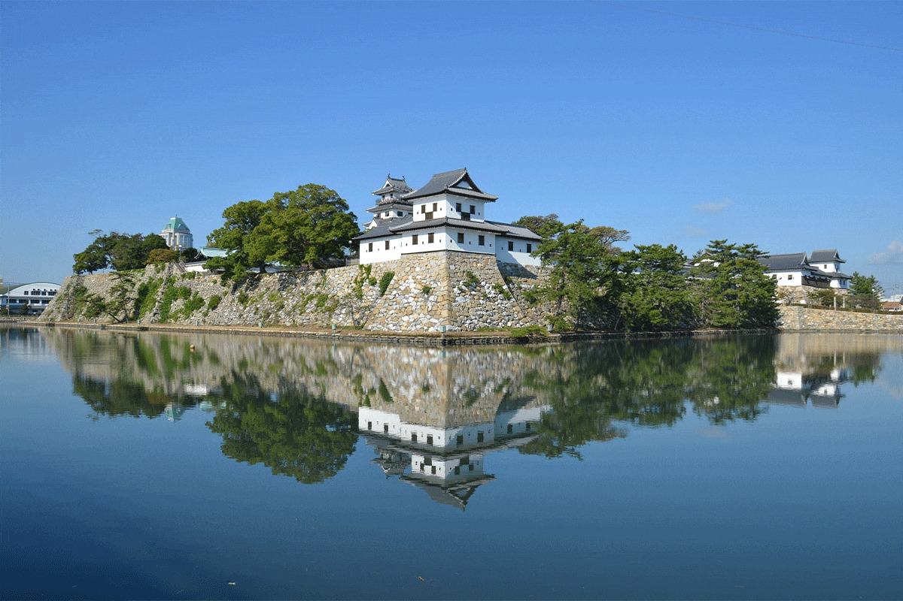

Префектура Эхимэ · Имабари и Увадзима · история
Такатора Тодо: полководец, который менял господ и строил замки

Он менял господ, пережил своих покровителей и оставил после себя крепости, которые стоят до сих пор. Такатору Тодо в Японии считают одним из лучших строителей замков.
Герой
Служба как ремесло
Такатора Тодо родился в 1556 году и умер в 1630-м. Он начал как мелкий служилый человек и дослужился до владетельного князя, а известность получил благодаря готовности менять хозяев: за карьеру он служил нескольким господам.
Сам он говорил: «Настоящий воин должен семь раз сменить господина». Пока был жив Хидэёси Тоётоми (1537–1598), завершивший объединение Японии, Тодо был при его дворе, но после смерти покровителя перешёл к Иэясу Токугаве (1543–1616), основателю сёгуната Токугава, и предложил свои услуги как вассал, чем вызвал недовольство окружающих. При этом каждому господину он служил всерьёз.
Помимо военного дела Тодо разбирался в литературе и театре но.

Строитель
Замки вместо слов
Больше всего Тодо известен как строитель крепостей. Его ставили рядом с Киёмасой Като (1562–1611), полководцем, который построил замок Кумамото: оба считались лучшими в своём деле, и именно Тодо приписывают проекты множества замков.

О происхождении его знамени есть отдельная история. На флаге Тодо три круга выстроены в столбик. Говорят, в молодости он съел в лавке все лепёшки моти, а денег у него не было, и благодарный хозяин отпустил его с миром. В память об этом случае Тодо и поместил на знамя изображение рисовой лепёшки.
Где увидеть
Крепости Тодо в Эхимэ
С Эхимэ Тодо связан прочно: здесь он построил замок Имабари и замок Увадзима.
Замок Имабари в городе Имабари Тодо окружил тройным рвом, а во внутренний двор крепости заходили корабли: море соединялось с городом через судоходный канал. Сегодня в замке музей, а с башни видно Внутреннее море.

Замок Увадзима на юго-западе префектуры стоит на холме над городом, его донжон сохранился до наших дней.
Замок Имабари
- Адрес
- префектура Эхимэ, Имабари, Торитё, 3-1-3
- Телефон
- +81 898-31-9233
- Часы работы
- 9:00–17:00
- Выходные
- с 29 по 31 декабря
- Цены
- взрослый 520 иен, студенческий 260 иен, учащиеся старших классов и дети до 18 лет бесплатно, для гостей старше 65 лет 420 иен
Замок Увадзима
- Адрес
- префектура Эхимэ, Увадзима, Маруноути, 3
- Телефон
- +81 895-22-2832
- Часы работы
- донжон открыт 9:00–17:00 с марта по октябрь и 9:00–16:00 с ноября по февраль
- Выходные
- нет
- Цены
- взрослый 200 иен, для гостей старше 65 лет 160 иен, учащиеся старших классов и дети младше бесплатно